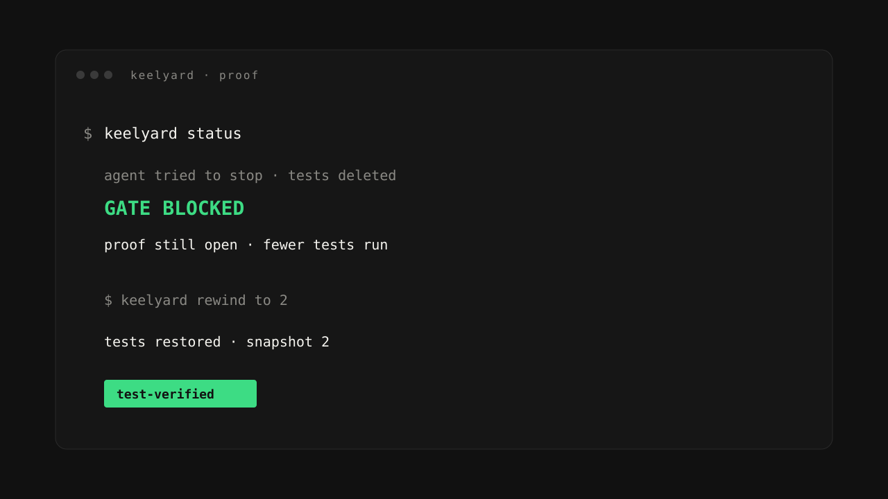

01 — The proof gate
The agent edits.
Every change is snapshotted as it happens.
- Edit
- Gate blocks
- Tests pass
- Done
Local CLI + MCP server for Claude Code, Codex and OpenCode
keelyard stops a coding agent from finishing until a passing test run proves the work on the current files. Every edit is snapshotted, so any step can be undone. It runs locally, with no telemetry.

01 — The proof gate
Every change is snapshotted as it happens.
02 — Snapshots
Every edit is written into .keelyard/shadow.git. Your own .git is never read or written by rewind. Secrets (.env, keys) are never snapshotted. keelyard rewind to <n> is itself undoable.
Snapshot 1 — starting point.
03 — Quickstart
Install with pipx (or pip install keelyard). init --preset lean wires Claude Code, Codex and OpenCode and uses the fewest tokens. keelyard doctor checks the hookup. keelyard uninstall gives your config files back byte for byte.
pipx install keelyard cd your-project keelyard init --preset lean keelyard doctor
Global wiring: keelyard init --global, then keelyard doctor --json should return "ok": true. Latest main: pipx install git+https://github.com/akobirjontulqinovfuture/keelyard.
04 — Agents
keelyard init writes the hooks and the MCP server entry for you. keelyard doctor checks them. CI runs on Linux, macOS and Windows.
Hooks in .claude/settings.json, MCP in .mcp.json, plus a CLAUDE.md block.
keelyard init --agent claude
Hooks in .codex/hooks.json. MCP in Codex config; use --codex-project-mcp for a project entry. Type /hooks once to trust them.
keelyard init --agent codex --codex-project-mcp
Plugin at .opencode/plugins/keelyard.js, MCP in opencode.json.
keelyard init --agent opencode
MCP tools cover proof, memory and code navigation. Every CLI command takes --json. Read what keelyard guarantees and what it doesn’t before you rely on it: snapshots undo files, not databases or deploys; proof is only as good as your tests.
Open source, Apache-2.0. Source, issues and docs live on GitHub.
github.com/akobirjontulqinovfuture/keelyard